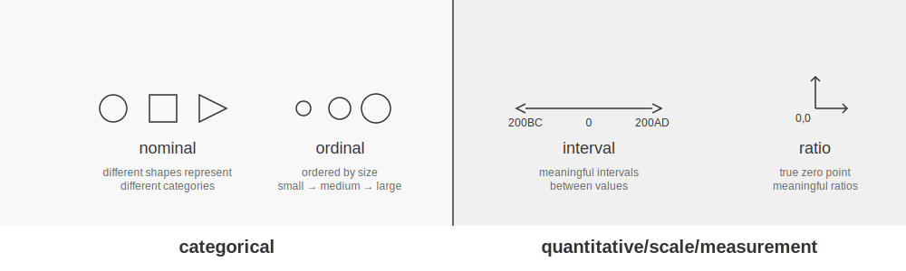

4 Zrozumienie Typów Danych w Naukach Społecznych
W badaniach z obszaru nauk społecznych zrozumienie natury danych jest kluczowe dla wyboru odpowiednich metod analizy i wyciągania prawidłowych wniosków.
4.1 Podstawy Zbiorów Liczbowych
Zrozumienie właściwości zbiorów liczbowych jest kluczowe dla uchwycenia natury różnych typów danych w naukach społecznych.
4.1.1 Podstawowe Zbiory Liczbowe
- Liczby Naturalne (ℕ): Liczby używane do liczenia obiektów {0, 1, 2, 3, …}
- Liczby Całkowite (ℤ): Obejmują liczby naturalne, ich przeciwności i zero {…, -2, -1, 0, 1, 2, …}
- Liczby Wymierne (ℚ): Liczby, które można wyrazić jako ułamek dwóch liczb całkowitych
- Liczby Rzeczywiste (ℝ): Wszystkie liczby na osi liczbowej, w tym wymierne i niewymierne
4.1.2 Właściwości Zbiorów
Zbiory Przeliczalne: Zbiory, których elementy można ustawić w relacji jeden do jednego z liczbami naturalnymi. Na przykład, zbiór liczb całkowitych jest przeliczalny.
Zbiory Nieprzeliczalne: Zbiory, które nie są przeliczalne. Zbiór liczb rzeczywistych jest nieprzeliczalny.
Zbiory Dyskretne: Zbiory, w których każdy element jest oddzielony od innych elementów skończoną przerwą. Liczby całkowite tworzą zbiór dyskretny.
Zbiory Gęste: Zbiory, w których między dowolnymi dwoma elementami zawsze znajduje się inny element zbioru. Liczby wymierne i rzeczywiste są zbiorami gęstymi.
4.2 Dane Dyskretne vs. Ciągłe
W nauce o danych i statystyce często kategoryzujemy zmienne jako dyskretne lub ciągłe. Jednak rozróżnienie to nie zawsze jest jednoznaczne, a niektóre zmienne wykazują cechy obu typów. Ta sekcja bada koncepcje danych dyskretnych i ciągłych, ich różnice oraz interesujące przypadki zmiennych, które można traktować jako oba typy lub które kwestionują nasze intuicyjne rozumienie.

4.2.1 Dane Dyskretne
Dane dyskretne mogą przyjmować tylko określone, przeliczalne wartości. Te wartości często (ale nie zawsze) są liczbami całkowitymi.
4.2.1.1 Cechy Danych Dyskretnych:
- Przeliczalne
- Często reprezentowane przez liczby całkowite
- Mogą być skończone lub nieskończone
- Brak wartości między dwoma sąsiednimi punktami danych
4.2.1.2 Przykłady:
- Liczba studentów w klasie
- Liczba samochodów sprzedanych przez dealera
- Rozmiary butów
4.2.2 Dane Ciągłe
Dane ciągłe mogą przyjmować dowolną wartość w danym zakresie, w tym wartości ułamkowe i dziesiętne. Ważne jest, aby zauważyć, że ciągłość nie jest określona wyłącznie przez nieprzeliczalność, ale również przez gęstość.
4.2.2.1 Cechy Danych Ciągłych:
- Mogą być nieprzeliczalne (jak liczby rzeczywiste) lub gęste (jak liczby wymierne)
- Mogą być mierzone z dowolną precyzją (teoretycznie)
- Reprezentowane przez liczby rzeczywiste lub gęste podzbiory liczb rzeczywistych
- Zawsze istnieją wartości między dowolnymi dwoma punktami danych
4.2.2.2 Przykłady:
- Wzrost
- Waga
- Temperatura
- Procenty (wyjaśnione dalej poniżej)
4.2.3 Spektrum Dyskretno-Ciągłe
W praktyce niektóre zmienne, które matematycznie są dyskretne, często są traktowane tak, jakby były ciągłe. Ta dwoista natura zapewnia elastyczność w analizie i interpretacji tych zmiennych.
4.2.3.1 Powody Traktowania Danych Dyskretnych jako Ciągłych:
- Gęsta Granularność
- Gdy zmienna dyskretna ma dużą liczbę możliwych wartości w danym zakresie, może przybliżać ciągłość.
- Przykład: Dochód mierzony w pojedynczych groszach. Choć technicznie dyskretny, duża liczba możliwych wartości sprawia, że zachowuje się podobnie do zmiennej ciągłej.
- Wygoda Analityczna
- Metody ciągłe często dają rozsądne i użyteczne wyniki nawet dla gęstych zmiennych dyskretnych.
- Często łatwiej jest używać istniejących narzędzi statystycznych, jeśli założymy ciągłość, ponieważ pozwala to na stosowanie metod opartych na rachunku różniczkowym.
- Przybliżenie Zjawisk Bazowych
- W niektórych przypadkach dyskretny pomiar może być przybliżeniem bazowego procesu ciągłego.
- Przykład: Chociaż mierzymy czas w dyskretnych jednostkach (sekundy, minuty, godziny), sam czas jest ciągły.
4.2.3.2 Przykłady Zmiennych o Dwoistej Naturze Dyskretno-Ciągłej:
- Wiek
- Dyskretny: Typowo mierzony w pełnych latach
- Ciągły: Może być uznany za zmienną ciągłą w wielu analizach, szczególnie przy dużych populacjach
- Cena i Dochód
- Dyskretne: Ceny i dochody są w rzeczywistości mierzone w dyskretnych jednostkach (np. grosze lub najmniejsza jednostka waluty)
- Ciągłe: W modelach ekonomicznych i wielu analizach ceny i dochody są traktowane jako zmienne ciągłe ze względu na ich gęstą naturę i wygodę analityczną
- Wyniki Testów
- Dyskretne: Często podawane jako liczby całkowite
- Ciągłe: W analizach statystycznych wyniki testów mogą być traktowane jako ciągłe, szczególnie gdy zakres możliwych wyników jest duży
4.2.4 Przypadek Szczególny: Procenty i Liczby Wymierne
Procenty przedstawiają interesujący przypadek w spektrum dyskretno-ciągłym:
- Natura Wymierna: Procenty są zasadniczo ułamkami (m/100), co czyni je liczbami wymiernymi.
- Gęste, ale Przeliczalne: Zbiór liczb wymiernych jest gęsty (między dowolnymi dwoma wymiernymi jest inny wymierny), ale także przeliczalny.
- Praktyczna Ciągłość: W większości praktycznych zastosowań procenty są traktowane jako ciągłe ze względu na ich gęstą naturę.
- Skończona Precyzja: W rzeczywistości procenty są często podawane z ograniczoną liczbą miejsc po przecinku, tworząc skończony zbiór możliwych wartości.
Zmienne mierzone w procentach, takie jak stopy bezrobocia czy frekwencja wyborcza, kwestionują nasze intuicyjne rozumienie dyskretności i ciągłości:
- Są liczbami wymiernymi (ułamki z mianownikiem 100), które technicznie są przeliczalne.
- Tworzą zbiór gęsty w swoim zakresie (od 0% do 100%), pozwalając na wartości między dowolnymi dwoma procentami.
- W praktyce są często traktowane jako zmienne ciągłe ze względu na ich gęstą naturę i wygodę analityczną.
- Precyzja pomiaru (np. podawanie do jednego lub dwóch miejsc po przecinku) może narzucić dyskretną strukturę na to, co koncepcyjnie jest zbiorem gęstym.
Ta dwoistość pozwala na elastyczne podejścia analityczne, w zależności od konkretnego kontekstu badawczego i wymaganej precyzji.
4.2.5 Implikacje dla Analizy Danych
Zrozumienie zniuansowanej natury zmiennych jako dyskretnych, ciągłych lub gdzieś pomiędzy ma ważne implikacje dla analizy danych:
- Elastyczność w Modelowaniu: Pozwala na wykorzystanie szerszego zakresu technik statystycznych.
- Uproszczone Obliczenia: Traktowanie gęstych danych dyskretnych jako ciągłych może uprościć obliczenia i uczynić niektóre analizy bardziej wykonalnymi.
- Lepsza Interpretowalność: W niektórych przypadkach traktowanie danych dyskretnych jako ciągłych może prowadzić do bardziej intuicyjnych lub użytecznych interpretacji wyników.
- Potencjał Błędu: Ważne jest, aby być świadomym, kiedy przybliżenia są odpowiednie, a kiedy mogą prowadzić do mylących wyników.
- Rozważania Teoretyczne vs. Praktyczne: Choć matematyczna natura danych jest ważna, praktyczne względy w pomiarze i analizie często kierują tym, jak traktujemy zmienne.
4.2.6 Wnioski
Rozróżnienie między danymi dyskretnymi a ciągłymi nie zawsze jest sztywne w naukach społecznych. Wiele zmiennych, w tym te dotyczące pieniędzy, procentów czy gęstych pomiarów, można oglądać przez pryzmat zarówno dyskretny, jak i ciągły. Wybór sposobu traktowania powinien być kierowany naturą danych, celami analizy i potencjalnymi implikacjami tego wyboru. Ta elastyczność, gdy jest używana rozważnie, zapewnia potężne narzędzia dla badaczy nauk społecznych do uzyskiwania wglądu w ich dane.
4.2.6.1 Kluczowe Rozróżnienie Językowe
W języku polskim mamy precyzyjne rozróżnienie:
- “Liczba†→ używamy dla rzeczy policzalnych
- “Ilość†→ używamy dla rzeczy niepoliczalnych
To rozróżnienie doskonale odzwierciedla dwa podstawowe typy danych liczbowych:
4.2.6.2 Dane Dyskretne = “Liczba czegoś”
Używamy słowa “liczba†(tak jak mówimy “liczba studentów”)
Wartości są rozdzielone jak pojedyncze elementy
Przykłady:
- Liczba książek: 0, 1, 2, 3…
- Liczba punktów w teście: 0, 1, 2…
- Liczba mieszkańców: 100, 101, 102…
🤔 Czy poprawne jest powiedzenie “ilość studentów†czy “liczba studentów� (Poprawna forma pomoże Ci rozpoznać typ danych)
4.2.6.3 Dane Ciągłe = “Ilość czegoś”
Używamy słowa “ilość†(tak jak mówimy “ilość wody”)
Wartości płynnie przechodzą jedna w drugą
Przykłady:
- Ilość cieczy: 1,5231… litra
- Ilość czasu: 2,3891… godziny
- Ilość energii: 5,7123… kWh
🤔 Czy mówimy “ilość wody†czy “liczba wody� (Poprawna forma wskazuje na typ danych)
4.2.6.4 Sposób Rozpoznawania
- Czy użyłbyś słowa “liczba� → Dane dyskretne
- Czy użyłbyś słowa “ilość� → Dane ciągłe
✍️ Ćwiczenie: Uzupełnij poprawnym słowem i określ typ danych
- _____ uczniów w klasie (liczba/ilość): typ _____
- _____ deszczu (liczba/ilość): typ _____
- _____ piosenek (liczba/ilość): typ _____
- _____ temperatury (liczba/ilość): typ _____
4.3 Wprowadzenie do Typologii Danych Stevensa
Stanley S. Stevens, amerykański psycholog, wprowadził system klasyfikacji skal pomiarowych w swoim artykule z 1946 roku “On the Theory of Scales of Measurement”. Ten system, znany jako typologia danych Stevensa lub poziomy pomiaru, stał się fundamentalny dla zrozumienia, jak różne typy danych powinny być analizowane i interpretowane.
Stevens zaproponował cztery poziomy pomiaru:
- Nominalny
- Porządkowy
- Interwałowy
- Ilorazowy
Każdy poziom ma specyficzne właściwości i pozwala na różne rodzaje operacji statystycznych i analiz.


4.3.1 Skala Nominalna
4.3.1.1 Definicja
Skala nominalna jest najbardziej podstawowym poziomem pomiaru. Używa etykiet lub kategorii do klasyfikacji danych bez żadnej wartości ilościowej ani porządku.
4.3.1.2 Właściwości
- Kategorie są wzajemnie wykluczające się
- Brak inherentnego porządku między kategoriami
- Nie można wykonywać znaczących operacji arytmetycznych
4.3.1.3 Przykłady
- Narodowość (Polak, Niemiec, …)
- Grupy krwi (A, B, AB, O)
- Kolor oczu (Niebieskie, Brązowe, Zielone, Piwne)
- Zmienne binarne (“Sukces†versus “Niepowodzenie”)
4.3.2 Skala Porządkowa
4.3.2.1 Definicja
Skala porządkowa kategoryzuje dane w uporządkowane kategorie, ale odstępy między kategoriami niekoniecznie są równe lub znaczące.
4.3.2.2 Właściwości
- Kategorie mają zdefiniowany porządek
- Różnice między kategoriami nie są kwantyfikowalne
- Operacje arytmetyczne na liczbach nie są znaczące
4.3.2.3 Przykłady
- Poziomy wykształcenia (Szkoła Średnia, Licencjat, Magister, Doktorat)
- Skale Likerta (Zdecydowanie się nie zgadzam, Nie zgadzam się, Neutralnie, Zgadzam się, Zdecydowanie się zgadzam)
- Status społeczno-ekonomiczny (Niski, Średni, Wysoki)
4.3.3 Skala Interwałowa
4.3.3.1 Definicja
Skala interwałowa ma uporządkowane kategorie z równymi odstępami między sąsiednimi kategoriami. Jednak brakuje jej prawdziwego punktu zerowego.
4.3.3.2 Właściwości
- Równe odstępy między sąsiednimi kategoriami
- Brak prawdziwego punktu zerowego (zero jest umowne)
- Stosunki między wartościami nie są znaczące
4.3.3.3 Przykłady
- Temperatura w stopniach Celsjusza lub Fahrenheita
- Lata kalendarzowe
- Skala pH
- Wysokość nad poziomem morza
4.3.4 Skala Ilorazowa
4.3.4.1 Definicja
Skala ilorazowa jest najwyższym poziomem pomiaru. Ma wszystkie właściwości skali interwałowej plus prawdziwy punkt zerowy, co sprawia, że stosunki między wartościami są znaczące.
4.3.4.2 Właściwości
- Wszystkie właściwości skal interwałowych
- Prawdziwy punkt zerowy
- Stosunki między wartościami są znaczące
4.3.4.3 Przykłady
- Wzrost
- Waga
- Wiek
- Dochód
Oczywiście! Poniżej znajdziesz poprawioną i sprawdzoną wersję Twojego materiału w formacie callout-note, gotową do użycia w Quarto (pisana w RStudio). Skopiuj ten kod do swojego pliku .qmd i dostosuj ewentualnie stylowanie do swoich preferencji.
4.3.4.4 Kluczowa Idea
Skala interwałowa to taka, w której odległości między wartościami są znaczące, ale punkt zerowy jest umowny. W przypadku skal interwałowych (np. temperatury):
- Dozwolone jest dodawanie/odejmowanie wartości oraz mnożenie/dzielenie przez stałe.
- Niedozwolone jest mnożenie/dzielenie wartości ze skali przez siebie, ponieważ prowadzi to do wyników bez interpretacji fizycznej.
4.3.4.5 Własności Skali Interwałowej
- Równe interwały reprezentują takie same różnice:
- Różnica między 20°C a 25°C (5°C) reprezentuje taką samą zmianę jak między 30°C a 35°C.
- Proporcje różnic są zachowane: 10°C to dwa razy większa zmiana niż 5°C.
- Punkt zero jest umowny:
- 0°C to punkt zamarzania wody, a nie brak temperatury.
- Ten sam stan fizyczny ma różne wartości w różnych skalach: 0°C = 32°F.
- Transformacja liniowa:
- Wzór ogólny: y = ax + b, gdzie a \neq 0.
- Dla temperatury: F = C \times \frac{9}{5} + 32.
4.3.4.6 Dlaczego Średnia Arytmetyczna Działa
Średnia arytmetyczna działa, ponieważ opiera się na dodawaniu i dzieleniu przez stałą, które są dozwolone w skali interwałowej. Przykład:
Dane: 20°C i 30°C
Metoda 1: Średnia w Celsjuszach, potem konwersja
1. Średnia: (20°C + 30°C) ÷ 2 = 25°C
2. Konwersja: 25°C × (9/5) + 32 = 77°F
Metoda 2: Konwersja na °F, potem średnia
1. Konwersja: 20°C → 68°F, 30°C → 86°F
2. Średnia: (68°F + 86°F) ÷ 2 = 77°F
Obie metody dają ten sam wynik! ✓Matematyczny dowód poprawności: \begin{align} \bar{F} &= \frac{F_1 + F_2}{2} \\ &= \frac{(C_1 \times \frac{9}{5} + 32) + (C_2 \times \frac{9}{5} + 32)}{2} \\ &= \frac{(C_1 + C_2) \times \frac{9}{5} + 64}{2} \\ &= \left(\frac{C_1 + C_2}{2}\right) \times \frac{9}{5} + 32 \\ &= \bar{C} \times \frac{9}{5} + 32 \end{align}
4.3.4.7 Dlaczego Wariancja Jest Problematyczna
Wariancja jest problematyczna, ponieważ opiera się na kwadratach różnic, co prowadzi do jednostek kwadratowych (np. °C²) bez jasnej interpretacji fizycznej. Przykład:
Te same temperatury: 20°C i 30°C
Metoda 1: Wariancja w Celsjuszach
1. Średnia: 25°C
2. Odchylenia: (20 - 25)°C = -5°C, (30 - 25)°C = 5°C
3. Kwadraty odchyleń: (-5°C)² = 25(°C)², (5°C)² = 25(°C)²
4. Średnia: (25 + 25)(°C)² ÷ 2 = 25(°C)²
Metoda 2: Wariancja w Fahrenheitach
1. Konwersja: 20°C → 68°F, 30°C → 86°F
2. Średnia: 77°F
3. Odchylenia: (68 - 77)°F = -9°F, (86 - 77)°F = 9°F
4. Kwadraty odchyleń: (-9°F)² = 81(°F)², (9°F)² = 81(°F)²
5. Średnia: (81 + 81)(°F)² ÷ 2 = 81(°F)²
Problem: 25(°C)² i 81(°F)² nie są równoważne!Matematyczna analiza problemu: \begin{align} (F_i - \bar{F})^2 &= [(C_i \times \frac{9}{5} + 32) - (\bar{C} \times \frac{9}{5} + 32)]^2 \\ &= [(C_i - \bar{C}) \times \frac{9}{5}]^2 \\ &= (C_i - \bar{C})^2 \times \left(\frac{9}{5}\right)^2 \end{align}
4.3.4.8 Wnioski Teoretyczne
- Operacje dozwolone:
- Dodawanie/odejmowanie (zachowuje różnice).
- Mnożenie/dzielenie przez stałe (skalowanie).
- Średnie arytmetyczne.
- Porównywanie różnic temperatur.
- Operacje niedozwolone:
- Mnożenie temperatur przez siebie.
- Dzielenie temperatur przez siebie.
- Średnie geometryczne.
- Współczynnik zmienności.
- Implikacje praktyczne:
- Wariancja i odchylenie standardowe wymagają ostrożnej interpretacji.
- Lepiej używać miar opartych na różnicach (np. MAD - średnie odchylenie bezwzględne).
- Przy porównywaniu zmienności warto standaryzować dane.
4.3.4.9 Zasada Praktyczna
Jeśli w obliczeniach pojawia się mnożenie wartości ze skali interwałowej przez siebie, należy zachować szczególną ostrożność w interpretacji wyników!
4.3.4.10 Dwa Rodzaje Proporcji
4.3.4.10.1 Proporcje wartości (NIE zachowują się w skali interwałowej):
Weźmy 80°C i 20°C:
W Celsjuszach: 80°C/20°C = 4
W Fahrenheitach: 176°F/68°F ≈ 2.59
W Kelwinach: 353.15K/293.15K ≈ 1.20
Te same temperatury dają różne proporcje!
→ Proporcje wartości NIE mają sensu na skalach interwałowych; sens mają tylko na skali ilorazowej.4.3.4.10.2 Proporcje różnic (zachowują się w skali interwałowej):
Weźmy dwie pary różnic:
Para 1: 30°C - 20°C = 10°C
Para 2: 80°C - 60°C = 20°C
Proporcja różnic w Celsjuszach:
20°C/10°C = 2
Te same temperatury w Fahrenheitach:
Para 1: 86°F - 68°F = 18°F
Para 2: 176°F - 140°F = 36°F
Proporcja różnic w Fahrenheitach:
36°F/18°F = 2
Proporcja różnic jest taka sama! ✓4.3.4.11 Matematyczne Wyjaśnienie
Dla transformacji F = \frac{9}{5}C + 32:
Proporcje wartości NIE zachowują się: [ = ]
Proporcje różnic zachowują się: [ = = ]
4.3.4.12 Dlaczego To Jest Ważne?
- Dla wartości:
- W skali Celsjusza: 40°C nie jest “dwa razy cieplejsze†niż 20°C.
- W skali Fahrenheita: 100°F nie jest “dwa razy cieplejsze†niż 50°F.
- Tylko w Kelwinach proporcje wartości mają sens fizyczny.
- Dla różnic:
- Wzrost o 20°C jest zawsze dwa razy większy niż wzrost o 10°C.
- Wzrost o 36°F jest zawsze dwa razy większy niż wzrost o 18°F.
- Proporcje różnic są niezależne od skali.
4.3.4.13 Implikacje dla Statystyk
- Operacje bazujące na różnicach (DZIAŁAJĄ):
- Średnia arytmetyczna.
- Odchylenie bezwzględne.
- Rozstęp.
- Operacje bazujące na proporcjach wartości (NIE DZIAŁAJĄ):
- Średnia geometryczna.
- Współczynnik zmienności.
- Wariancja (bo używa kwadratu wartości).
4.3.5 Znaczenie w Badaniach i Analizie
Zrozumienie typologii danych Stevensa jest kluczowe z kilku powodów:
Wybór odpowiednich testów statystycznych: Poziom pomiaru determinuje, które analizy statystyczne są odpowiednie dla danego zbioru danych.
Interpretacja wyników: Znaczenie wyników statystycznych zależy od poziomu pomiaru zaangażowanych zmiennych.
Projektowanie narzędzi pomiarowych: Przy tworzeniu ankiet lub innych narzędzi pomiarowych badacze muszą wziąć pod uwagę poziom pomiaru, który chcą osiągnąć.
Transformacja danych: Czasami dane mogą być przekształcane z jednego poziomu na drugi, ale musi to być robione ostrożnie, aby uniknąć błędnej interpretacji.
4.3.6 Kontrowersje i Ograniczenia
Chociaż typologia Stevensa jest szeroko stosowana, spotkała się z pewnymi krytykami:
Sztywność: Niektórzy twierdzą, że typologia jest zbyt sztywna i że wiele rzeczywistych pomiarów mieści się pomiędzy tymi kategoriami.
Traktowanie danych porządkowych: Trwa debata na temat tego, kiedy właściwe jest traktowanie danych porządkowych jako interwałowych dla pewnych analiz.
Skalowanie psychologiczne: Niektóre konstrukty psychologiczne (jak inteligencja) są trudne do jednoznacznego skategoryzowania w ramach tego systemu.
4.3.7 Podsumowanie
Typologia danych Stevensa dostarcza fundamentalnych ram dla zrozumienia różnych rodzajów danych i ich właściwości. Rozpoznając poziom pomiaru swoich zmiennych, badacze mogą podejmować świadome decyzje dotyczące gromadzenia danych, analizy i interpretacji. Jednak ważne jest, aby pamiętać, że chociaż ta typologia jest użytecznym przewodnikiem, rzeczywiste dane często wymagają niuansowego podejścia i nie zawsze pasują idealnie do tych kategorii.
pH is considered an interval scale because:
It has ordered categories: Lower pH values indicate higher acidity, while higher values indicate higher alkalinity.
The intervals between adjacent pH values are equal in terms of hydrogen ion concentration:
- Each whole number change in pH represents a tenfold change in hydrogen ion concentration.
- For example, the difference in acidity between pH 4 and pH 5 is the same as the difference between pH 7 and pH 8.
It lacks a true zero point:
- pH 0 does not represent a complete absence of hydrogen ions.
- Negative pH values and values above 14 are possible in extreme conditions.
Ratios are not meaningful:
- A pH of 4 is not “twice as acidic†as a pH of 2.
- The ratio of hydrogen ion concentrations, not pH values, indicates relative acidity.
These characteristics align with the definition of an interval scale, where the differences between values are meaningful and consistent, but ratios are not interpretable.
4.4 Popularne Skale Porządkowe w Badaniach Behawioralnych
4.4.1 Skale Likerta
Skale Likerta są szeroko stosowane w psychologii i naukach społecznych do pomiaru postaw, opinii i percepcji. Nazwane na cześć psychologa Rensisa Likerta, skale te zazwyczaj składają się z serii stwierdzeń lub pytań, które respondenci oceniają na skali, często od “Zdecydowanie się nie zgadzam†do “Zdecydowanie się zgadzam”.

4.4.1.1 Dlaczego Skale Likerta są Zmiennymi Porządkowymi
Skale Likerta są uważane za zmienne porządkowe z kilku powodów:
Porządek bez równych odstępów: Chociaż odpowiedzi mają wyraźną kolejność (np. “Zdecydowanie się nie zgadzam†< “Nie zgadzam się†< “Neutralnie†< “Zgadzam się†< “Zdecydowanie się zgadzam”), odstępy między tymi kategoriami niekoniecznie są równe.
Subiektywna interpretacja: Różnica między “Zdecydowanie się nie zgadzam†a “Nie zgadzam się†może nie być taka sama jak różnica między “Zgadzam się†a “Zdecydowanie się zgadzam†dla wszystkich respondentów.
Brak prawdziwego punktu zerowego: Skale Likerta zazwyczaj nie mają prawdziwego punktu zerowego, co jest cechą charakterystyczną skal interwałowych lub ilorazowych.
4.4.2 IQ i Inne Zmienne Psychologiczne jako Miary Porządkowe
Wiele miar psychologicznych, w tym IQ, jest często traktowanych jako skale interwałowe, ale w rzeczywistości są to skale porządkowe. Oto dlaczego:
Wyniki IQ:
- Chociaż wyniki IQ są przedstawiane jako liczby, różnica między IQ 100 a 110 może nie reprezentować takiej samej różnicy poznawczej jak między 130 a 140.
- Skala jest normalizowana i dostosowywana w czasie, co utrudnia stwierdzenie, że ma właściwości prawdziwie interwałowe.
Inne Miary Psychologiczne:
- Skale depresji (np. Inwentarz Depresji Becka)
- Miary lęku (np. Inwentarz Stanu i Cechy Lęku)
- Oceny osobowości (np. Inwentarz Wielkiej Piątki)
Te miary często wykorzystują sumowane pozycje typu Likerta lub inne metody punktacji, które nie gwarantują równych odstępów między wynikami.
4.4.3 Implikacje dla Analizy
Uznanie tych miar za porządkowe ma ważne implikacje dla analizy danych:
Odpowiednie testy statystyczne: Używaj testów nieparametrycznych (np. test U Manna-Whitneya, test Kruskala-Wallisa) zamiast parametrycznych.
Analiza korelacji: Używaj korelacji rangowej Spearmana zamiast korelacji Pearsona.
Tendencja centralna: Raportuj medianę i dominantę zamiast średniej.
Wizualizacja danych: Stosuj metody odpowiednie dla danych porządkowych, takie jak wykresy słupkowe lub skumulowane wykresy słupkowe.
4.4.4 Podsumowanie
Chociaż skale Likerta i wiele miar psychologicznych jest często traktowanych jako dane interwałowe ze względów praktycznych, ważne jest, aby pamiętać o ich porządkowym charakterze.

| Measure (EN) | Miara (PL) | Nominal | Ordinal | Interval | Ratio |
|---|---|---|---|---|---|
| Central Tendency / Tendencja centralna: | |||||
| Mode | Dominanta | ✓ | ✓ | ✓ | ✓ |
| Median | Mediana | - | ✓ | ✓ | ✓ |
| Arithmetic Mean | Średnia arytmetyczna | - | - | ✓ | ✓ |
| Geometric Mean | Średnia geometryczna | - | - | - | ✓ |
| Harmonic Mean | Średnia harmoniczna | - | - | - | ✓ |
| Dispersion / Rozproszenie: | |||||
| Range | Rozstęp | - | ✓ | ✓ | ✓ |
| Interquartile Range | Rozstęp międzykwartylowy | - | ✓ | ✓ | ✓ |
| Mean Absolute Deviation | Średnie odchylenie bezwzględne | - | - | ✓ | ✓ |
| Variance | Wariancja | - | - | ✓* | ✓ |
| Standard Deviation | Odchylenie standardowe | - | - | ✓* | ✓ |
| Coefficient of Variation | Współczynnik zmienności | - | - | - | ✓ |
| Association / Współzależność: | |||||
| Chi-square | Chi-kwadrat | ✓ | ✓ | ✓ | ✓ |
| Spearman Correlation | Korelacja Spearmana | - | ✓ | ✓ | ✓ |
| Kendall’s Tau | Tau Kendalla | - | ✓ | ✓ | ✓ |
| Pearson Correlation | Korelacja Pearsona | - | - | ✓* | ✓ |
| Covariance | Kowariancja | - | - | ✓* | ✓ |
* Theoretically problematic but commonly used in practice / Teoretycznie problematyczne, ale powszechnie stosowane w praktyce
4.4.5 Notes / Uwagi:
- Measurement Scales / Skale pomiarowe:
- Nominal: Categories without order / Kategorie bez uporządkowania
- Ordinal: Ordered categories / Kategorie uporządkowane
- Interval: Equal intervals, arbitrary zero / Równe interwały, umowne zero
- Ratio: Equal intervals, absolute zero / Równe interwały, absolutne zero
- Practical Considerations / Aspekty praktyczne:
- Some measures marked with ✓* are commonly used for interval data despite theoretical issues / Niektóre miary oznaczone ✓* są powszechnie stosowane dla danych przedziałowych pomimo problemów teoretycznych
- Choice of measure should consider both theoretical appropriateness and practical utility / Wybór miary powinien uwzględniać zarówno poprawność teoretyczną jak i użyteczność praktyczną
- More restrictive scales (ratio) allow all measures from less restrictive scales / Bardziej restrykcyjne skale (ilorazowe) pozwalają na wszystkie miary z mniej restrykcyjnych skal